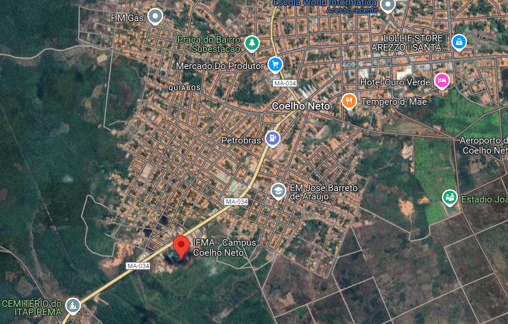

(Os Institutos Federais de Educação, Ciência e Tecnologia são instituições de educação básica, profissional e superior publicas federais brasileiras. Os institutos federais compõem a Rede Federal de Educação Profissional, Científica e Tecnológica. )

O IFMA Campus Coelho Neto foi autorizado a funcionar em 23 de abril de 2013. Em 2012, durante a construção do campus, ocorreu a audiência pública no dia 05 de julho e nela foram elencados os eixos tecnológicos e definidos os cursos técnicos em Informática e Administração. Além do curso em Automação Industrial. No dia 05 de dezembro de 2012, o Campus Coelho Neto é inaugurado em ato solene em Brasília (DF). Em 2013, o Campus recebeu sua autorização de funcionamento do dia 23 de abril.As aulas foram iniciadas em 16 de setembro, com chegada dos professores temporários. Em 2015, é autorizada a construção do prédio definitivo do campus com uma área de 4 mil metros quadrados e que foi entregue finalizado à comunidade no ano de 2020.

O Instituto oferece três formas de cursos técnicos: integrada, concomitante e subsequente. Na forma integrada, o aluno cursa o Ensino Médio juntamente com uma formação profissional no IFMA. O Campus Coelho Neto conta com os seguintes cursos técnicos integrado ao Ensino Médio:
Técnico em Administração:
O curso de técnico em Administração integrado ao ensino médio visa apresentar-se como uma área abrangente com diversas oportunidades de carreira para os seus profissionais, com áreas completamente diversificadas (Gestão de Pessoas, Marketing, Produção, Administração Estratégica, Projetos, Financeira e Orçamentária, Materiais e Patrimônio, Qualidade, Logística e Cadeia de Suprimentos, e Empreendedorismo) que podem ser realizadas em organizações do setor público, privado e do terceiro setor. O curso está disponível para os turnos Vespertino e Matutino. A forma de ingresso no curso se dá pelo processo seletivo realizado pelo IFMA.
Técnico em Automação Industrial:
O curso de técnico em Automação industrial integrado ao ensino médio visa Formar profissionais para atuarem no setor de processos industriais munidos dos conhecimentos técnicos aliados a uma formação omnilateral e ao desenvolvimento de saberes que permitam a atuação em uma sociedade em permanente transformação, aplicando e produzindo conhecimentos científicos e tecnológicos, alicerçados em princípios e valores éticos, políticos, estéticos e sustentáveis. Desenvolvendo ainda a capacidade crítico-reflexivo, atravésdo estudo dos fundamentos socioculturais, científicos e tecnológicos historicamente acumulados, na perspectiva de prepará-lo para o exercício da cidadania e sua inserção no mundo do trabalho. O curso está disponível para os turnos Vespertino e Matutino. A forma de ingresso no curso se dá pelo processo seletivo realizado pelo IFMA.
Técnico em Informática:
O curso de técnico em Informática integrado ao ensino médio visa dar ênfase à vida profissional dos estudantes para atuarem no setor da ciência da computação, buscando ser proficionais de ensino com educação, conhecimento, respeito e formação acadêmica de qualidade. Atuando em uma sociedade onde cada vez se presa a tecnologia e conhecimenntos científicos. O curso está disponível para os turnos Vespertino e Matutino. A forma de ingresso no curso se dá pelo processo seletivo realizado pelo IFMA.
Além dos cursos integrais, o IFMA CN conta com outras demais formas de se proficonalizar, além dos técnicos. Possuindo dois cursos de gradução, sendo eles o Bacharelado em Administração e o Tecnologia em Análise e Desenvolvimento de Sistemas. O IFMA CN possui também um curso subsequente, ou seja, um curso especializado para quem já terminou o ensino médio e queira ingressar em um curso superior, O IFMA atualamente conta com um único curso subsequente sendo o técnico em Automação Industrial (Subsequente).
O Instituto Federal do Maranhão (IFMA) Campus Coelho Neto está localizado na MA-034, Av. Antônio Guimarães, S/Nº, Bairro Olho D’aguinha, Coelho Neto – MA, CEP: 65620-000.
Link maps:
https://maps.app.goo.gl/4bfCVsYvpgcg2uvc8
O IFMA conta com diversos eventos realizados durante os anos letivos, como por exemplo a SNCT(Semana nacional de ciencia e Tecnologia) que é voltado para apresentação de temas especificados pelo governno brasileiro, visando introduzir os jovens do ensino médio ao meio academico-ciêntífico. tendo evento diversos, como apresentação de projetos de pesquisa pela SEMIC, Palestras, e dentre outros muitos eventos internos que ocorrem dentro da instituição.
Alguns eventos:


O IFMA campus Coelho Neto conta com um Bloco dos setores educacionais, sendo eles:
Possui também 9 salas de aula, sendo 4 delas no 1º andar e 5 no 2º andar. tem dois laboratorios de Informatica, um laboratorio de Matematica, um laboratorio de Quimica, um laboratorio de Biologia, um laboratório de física e um Laboratorio de Automação Industrial. Tendo Banheiros para os discentes, Banheiros para os Servidores, Bloco de Assistencia Estudantil: CAE, Departamentos de Apoio ao Discente e etc, Quadra Poliesportiva, dois Auditórios(Um de maior área e um de menor área), uma Fábrica de Inovação, um Setor de Protocolo e uma biblioteca.